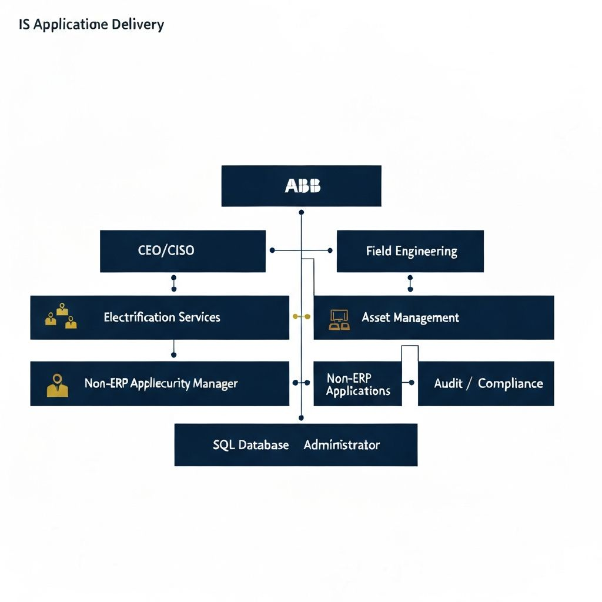
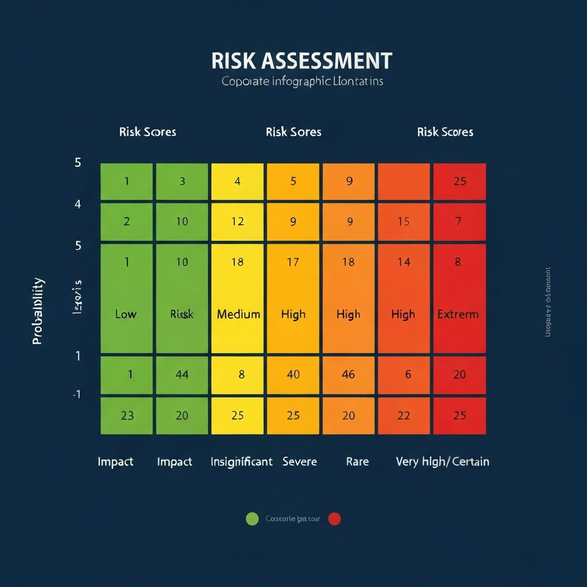
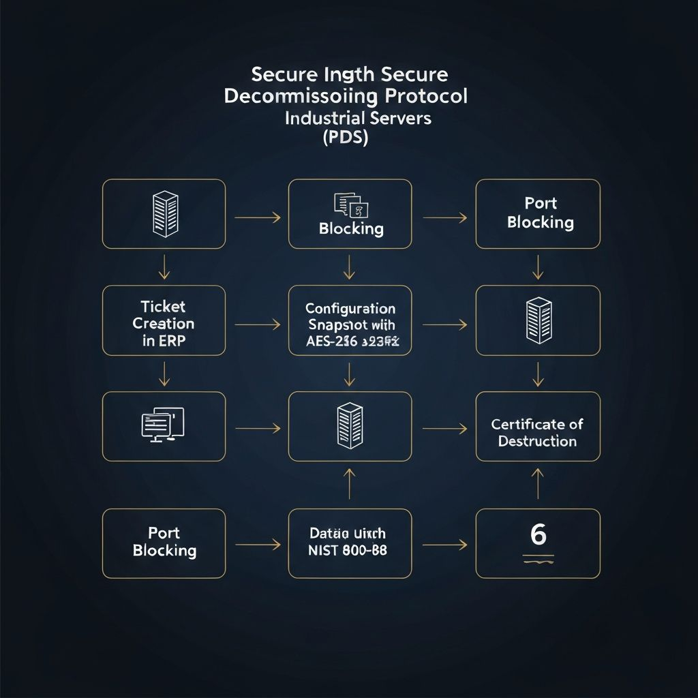
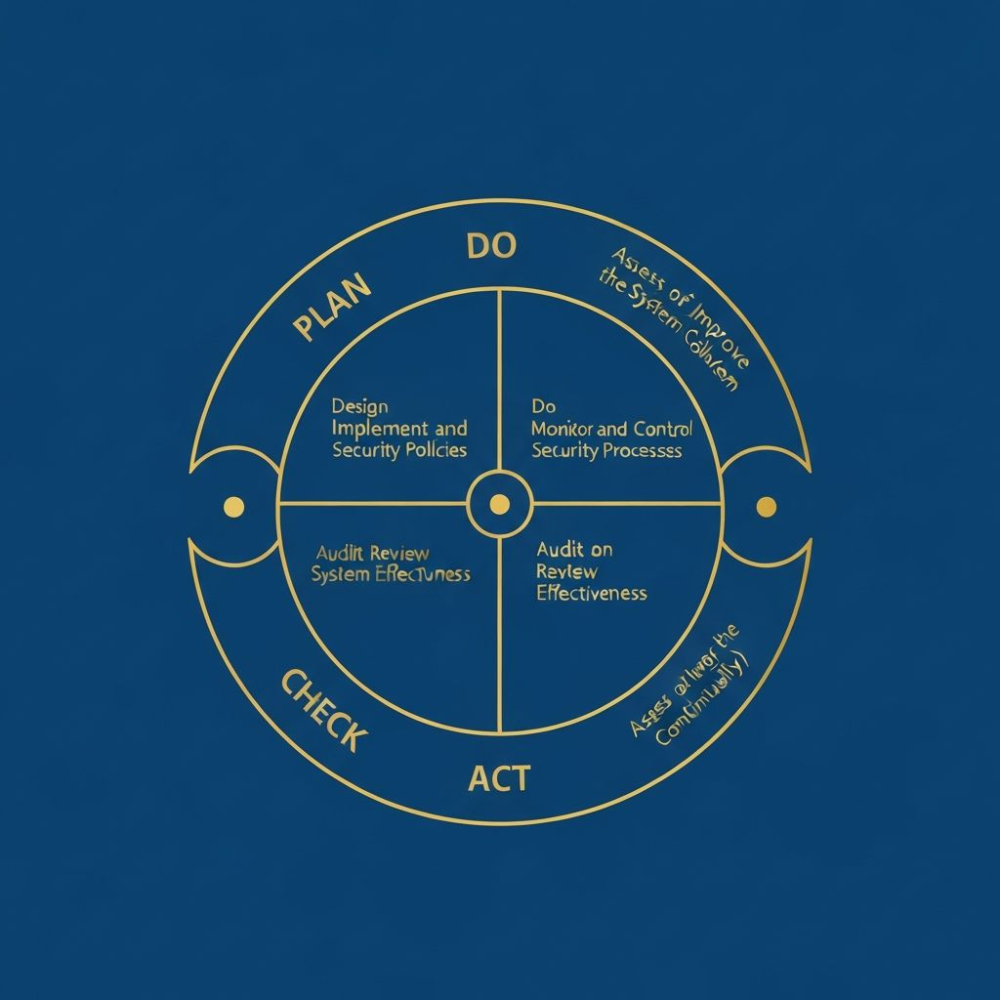

Implementacion de SGSI basado en ISO 27001 para ABB — Division de Electrificacion
ABB tiene como mision principal impulsar la transformacion de la sociedad y la industria para lograr un futuro mas productivo y sostenible mediante la electrificacion y automatizacion.
Consolidarse como el socio de servicio confiable que asegura que los activos electricos sean fiables, esten disponibles y preparados para el futuro frente a la obsolescencia tecnica.
Implementar un marco solido basado en ISO 27001 para proteger la informacion, adaptandose a los riesgos especificos de la industria de la energia y automatizacion.
ABB se formo mediante una fusion en 1988, pero un hito critico fue la adquisicion de GE Industrial Solutions en 2018, integrando marcas historicas como AEG, Agut y Vynckier.
Estructura jerarquica por puestos y departamentos:

| Departamento | Puesto | Funcion en el SGSI |
|---|---|---|
| Alta Direccion | Director Ejecutivo (CEO) / CISO | Establecer la direccion estrategica y la Politica de Seguridad (PSI) |
| Servicios de Electrificacion | Gerente de Producto de Ciclo de Vida | Gestionar la obsolescencia y el soporte de activos heredados |
| Ingenieria de Campo | Ingeniero de Soporte Tecnico Senior | Ejecutar tecnicas de mantenimiento y operacion segura en sitio |
| Manager Continental de Ciberseguridad | Director de seguridad digital | Definir la estrategia de ciberseguridad a nivel region, aprobar politicas |
| Administrador de Base de Datos | Gerente de BD para Norteamerica | Implementar controles de seguridad en BD, gestionar respaldos y cifrados |
| Auditoria y Cumplimiento | Auditor Interno de SGSI | Realizar evaluaciones de desempeno y auditorias internas periodicas |
Departamento de Servicios de Electrificacion (Division de activos heredados GE).
Gestion de Vulnerabilidades y Eliminacion de Informacion en servidores de control industrial retirados.
Servidor de Almacenamiento de Datos de Configuracion (Main Controller Server)
El proceso abarca desde la identificacion del activo obsoleto en la planta de San Luis Potosi hasta la validacion de la eliminacion total de datos sensitivos y configuraciones de red, excluyendo el desecho fisico del hardware.
ABB utiliza las 81 definiciones de la norma ISO 27000. A continuacion, se detallan las mas criticas:
| # | Termino | Definicion |
|---|---|---|
| 1 | Activo de Informacion | Conocimientos o datos que tienen valor para ABB, como los planos de ingenieria |
| 2 | Confidencialidad | Garantia de que la informacion no sea accesible a personas no autorizadas |
| 3 | Integridad | Propiedad de salvaguardar la exactitud y completitud de los datos |
| 4 | Disponibilidad | Asegurar que los sistemas de electrificacion sean utilizables cuando se requieran |
| 5 | Riesgo | Efecto de la incertidumbre sobre los objetivos de productividad de ABB |
| 6 | Vulnerabilidad | Debilidad en un equipo que puede ser explotada |
| 7 | Amenaza | Causa potencial de un incidente, como un ciberataque a la red electrica |
| 8 | Control | Medida que modifica el riesgo de seguridad |
| 9 | SGSI | Sistema de Gestion de Seguridad de la Informacion |
| 10 | Resiliencia | Capacidad de la infraestructura para resistir y recuperarse de ataques |
| 11 | PII | Informacion de Identificacion Personal |
| 12 | Endpoint | Dispositivo fisico de diagnostico conectado a la red industrial |
| Politica | Activo | Descripcion |
|---|---|---|
| Control de Acceso | Credenciales de Acceso | Uso obligatorio de MFA para acceso administrativo a servidores de control industrial |
| Desarrollo Seguro | Codigo fuente | Analisis estatico de seguridad antes de desplegar en produccion |
| Gestion de Almacenamiento | Servidores de Almacenamiento | Borrado logico irreversible antes de desincorporacion fisica |
| Respaldo de Datos | Backups locales | Copias de seguridad diarias de configuraciones criticas |
| Monitoreo de Seguridad | Logs de auditoria | Registro de intentos de acceso fallidos y cambios de privilegios |
| Politica | Activo | Descripcion |
|---|---|---|
| Seguridad en la Nube | Servicios Cloud Azure/AWS | Proveedores deben acreditar cumplimiento con ISO/IEC 27017 |
| Gestion de Proveedores | Soporte TIC externo | Contratos con clausulas de seguridad y acuerdos de confidencialidad |
| Cumplimiento Regulatorio | Leyes de Proteccion de Datos | Alineacion con leyes de privacidad como GDPR |
| Integridad de Suministros | Repuestos originales OEM | Solo repuestos originales verificados para equipos criticos |
| Software de Terceros | Licencias de software | Prohibicion de software sin licencias validas |

| ID | Activo Critico | Prob. | Imp. | Nivel de Riesgo |
|---|---|---|---|---|
| I9 | Personal y Etica (Ingenieria Social) | 04 | 05 | 20 - EXTREMO |
| E9 | Bibliotecas Codigo Abierto (Malware) | 05 | 04 | 20 - EXTREMO |
| I1 | Credenciales de Acceso (Robo) | 03 | 05 | 15 - MUY ALTO |
| I3 | Servidores Almacen (Fuga de datos) | 03 | 05 | 15 - MUY ALTO |
| E7 | Suministro Energia Externa (Corte) | 03 | 05 | 15 - MUY ALTO |
| I5 | Logs de Auditoria (Omision) | 04 | 03 | 12 - ALTO |
| I8 | Configuracion de Red (Error Humano) | 03 | 04 | 12 - ALTO |
| E8 | Datos Clientes (Intercepcion) | 03 | 04 | 12 - ALTO |
Asignatura: CNO V: Seguridad Informatica | Institucion: Universidad Politecnica de San Luis Potosi (UPSLP)
Caso de Estudio: Implementacion de SGSI en la empresa ABB (Division Electrificacion)
| Seccion | Entregables y Hallazgos | Estado |
|---|---|---|
| S1: Contexto | Analisis de mision y vision de ABB; estructuracion del organigrama funcional | Finalizado |
| S2: Referencias | Seleccion del marco normativo: ISO 27001, 27002, 27017, 27019 | Finalizado |
| S3: Glosario | Compendio de 15 terminos fundamentales basados en ISO 27000 | Finalizado |
| S4: Inventario | Clasificacion de 40 activos criticos (20 internos, 20 externos) | Finalizado |
| S5: Politicas | Diseno de 20 politicas funcionales siguiendo jerarquia de estandares | Finalizado |
| S6: Riesgos | Desarrollo de matriz de riesgo (Impacto x Probabilidad) | Finalizado |
Para el Servidor de Almacenamiento de Datos de Configuracion (Main Controller Server), el equipo ha disenado el siguiente flujo operativo:

| Riesgo | Nivel Inicial | Accion de Tratamiento | Nivel Residual |
|---|---|---|---|
| Fuga de planos por borrado incompleto | 15 | Verificacion bit a bit tras el borrado y certificado de destruccion | 04 |
| Robo de credenciales administrativas | 15 | Uso de Tokens Fisicos (MFA) para autorizar comando de destruccion | 05 |
| Vulnerabilidades en Software de Terceros | 20 | Uso de herramientas en Entorno Limpio (Bootable externo) | 08 |
| Paso | Actividad | Responsable | Evidencia |
|---|---|---|---|
| 1 | Inventario | Ing. Alan Gilberto | Etiqueta de "Activo en Proceso de Baja" |
| 2 | Aislamiento | Ing. Santiago Lara | Log de desconexion del switch de red |
| 3 | Sanitizacion | Ing. Brian Salvador | Reporte de software de borrado (Pass/Fail) |
| 4 | Auditoria | Ing. Mayeli Sanchez | Hash de verificacion del disco sanitizado |
| 5 | Validacion | Ing. Omar Karim | Certificado de Eliminacion de Informacion |
| ID | Control / Requisito de Auditoria | Evidencia |
|---|---|---|
| 01 | Existe un registro formal del activo previo a su retiro | Inventario de activos (Seccion 4) |
| 02 | Se verifico la integridad del respaldo en la nube antes del borrado | Log de transferencia de Azure/AWS |
| 03 | El software de onboarding/offboarding cuenta con procedimientos estandar | Manual de procedimientos operativos |
| 04 | La gestion de identidades es manejada por Microsoft Entra IAM | Panel de administracion de Microsoft Entra |
| 05 | Se aplico el metodo de sobreescritura de 3 pasadas (NIST Purge) | Reporte tecnico de Blancco/DBAN |
| 06 | El personal cuenta con MFA activo para autorizar la baja | Logs de acceso de Microsoft Entra IAM |
| 07 | Existe un Certificado de Destruccion de Datos firmado y fechado | Formato de salida de activos |
Los resultados se presentan al Application Service Delivery Manager para la toma de decisiones estrategicas:

Cuando se identifica un incumplimiento de los controles establecidos, se ejecuta el siguiente procedimiento:
Ejemplo de Hallazgo: Se detecto la baja de un activo critico sin que el registro de eliminacion se indexara correctamente en el panel de supervision.
Causa Raiz: Incompatibilidad del script de automatizacion con las politicas de auditoria del sistema local.
Accion Correctiva: Configurar alerta automatizada en el gestor de identidades para bloquear la transicion de estatus hasta validacion del hash de borrado.
El equipo de consultoria academica de la UPSLP concluye el diseno detallado del Sistema de Gestion de Seguridad de la Informacion para el caso de estudio de ABB. La correcta alineacion entre las politicas funcionales, la asignacion de riesgos cuantitativos, los flujos de soporte tecnico, la ejecucion bajo estandares internacionales y las directrices de auditoria e identidad corporativa, demuestran la viabilidad de implementar un marco de gobernanza de ciberseguridad robusto, eficiente y apegado a las exigencias normativas de la industria tecnologica actual.